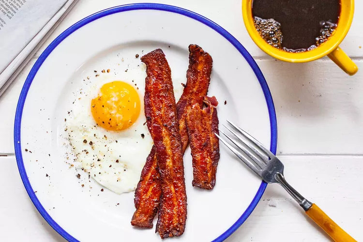

Ovo Frito
Fritar um ovo parece simples, né?Mas até as missões mais fáceis têm seus segredos — e com o chef.io, você vai dominar cada detalhe. 
No universo da cozinha, o ovo frito é o equivalente à primeira missão de qualquer herói: essencial, rápida e cheia de armadilhas escondidas.
Já deixou a gema dura sem querer? Ou a clara grudada e esturricada? Acredite, até os maiores mestres começaram por aqui. Agora é sua vez de subir de nível!
Nesta missão, você vai aprender como fritar um ovo com gema perfeita e clara cozida no ponto certo — sem queimar, sem grudar, e com aquele visual de dar orgulho.
Pronto para começar? Pegue sua frigideira, e vamos juntos nessa jornada culinária!
Fritando ovo
- PREPARO
- COZIMENTO
4 mins - DESCANSO
- TOTAL
4 mins
RENDIMENTO: 1 porção
NOTA: É seguro dobrar essa receita usando a mesma frigideira.
Ingredientes
- 1 ovo grande
- 1 a 2 colheres de chá de manteiga ou azeite de oliva
Modo de preparo
-
Aqueça a frigideira:
Derreta a manteiga ou aqueça o óleo em fogo baixo por cerca de 1 minuto. Use 1 colher de chá de manteiga ou óleo por ovo se estiver usando uma frigideira antiaderente ou de ferro bem curada. Se for uma frigideira de aço inox, utilize 2 colheres de chá. Incline a frigideira para espalhar a gordura por todo o fundo. -
Cozinhe o ovo com a frigideira no fogo:
Quebre o ovo diretamente na frigideira e assim que o ovo começar a cozinhar, tempere com uma pitada de sal e, se quiser, pimenta-do-reino a gosto. Tampe a frigideira e deixe cozinhar por 1 minuto e meio a 2 minutos, com a tampa fechada, ou até que toda a clara esteja cozida, exceto uma pequena borda ao redor da gema. -
Vire o ovo (opcional):
Se quiser a gema menos mole, use uma espátula fina para virar o ovo com cuidado. Depois de virar, cozinhe por mais alguns segundos, dependendo do ponto desejado:
– Pouco tempo (10 a 15 segundos): gema ainda molinha.
– Mais tempo (20 a 30 segundos): gema mais firme ou completamente dura. -
Finalize o cozimento fora do fogo:
Retire a frigideira do fogo, mantendo a tampa, e deixe o ovo descansar por cerca de 30 segundos para terminar de cozinhar com o calor residual. -
Sirva!
Retire a tampa. Com uma espátula, levante cuidadosamente por baixo da gema e retire o ovo da frigideira. Sirva em seguida.
:max_bytes(150000):strip_icc():format(webp)/__opt__aboutcom__coeus__resources__content_migration__simply_recipes__uploads__2018__12__Fry-an-Egg-METHOD-1-8ea63efa898743e9a2ac4556a63dc82c.jpg)
:max_bytes(150000):strip_icc():format(webp)/__opt__aboutcom__coeus__resources__content_migration__simply_recipes__uploads__2018__12__Fry-an-Egg-METHOD-3-567fefd0213f48baac3adfc17152fe23.jpg)
:max_bytes(150000):strip_icc():format(webp)/__opt__aboutcom__coeus__resources__content_migration__simply_recipes__uploads__2018__12__Fry-an-Egg-LEAD-6-bf54c5e00e8247b1a9c4d85b2903cef3.jpg)
Desvendando o ovo frito perfeito
Fritar um ovo pode parecer tarefa simples, mas envolve atenção aos detalhes e escolhas que fazem toda a diferença no resultado final. Dominar essa técnica é como conquistar a primeira insígnia na sua jornada de chef!
A frigideira ideal:
Qualquer frigideira serve: antiaderente, ferro fundido bem curado ou até inox.
Mas se quiser evitar que o ovo grude ou usar menos gordura, a antiaderente é sua melhor aliada.
Para dois ovos, uma frigideira de 20cm é suficiente. Mais ovos? Frigideira maior!
Não subestime a tampa:
A tampa é a carta secreta dessa missão. Ela ajuda a cozinhar o ovo por igual, usando o
vapor para deixar a gema no ponto e a clara cozida sem ressecar. Sem tampa, o fundo
cozinha rápido demais e a parte de cima fica crua.
Fogo baixo, sempre:
Aqui, paciência é poder. O fogo baixo garante que o calor se espalhe suavemente, cozinhando o ovo por igual.
Quando o branco estiver quase todo opaco, desligue o fogo e mantenha a tampa — o
calor restante finaliza o trabalho com perfeição.
Gordura? Você escolhe!
Prefere o sabor da manteiga ou a leveza do azeite? Vai do seu estilo. Só ajuste a quantidade:
1 colher de chá por ovo para frigideiras antiaderentes ou de ferro, e 2 colheres se for usar
uma frigideira de inox.
Tempo é tudo:
O tempo total? Cerca de 3 a 4 minutos. Mas fique de olho: quando só uma borda fina ao
redor da gema ainda estiver translúcida, é hora de tirar do fogo e deixar a magia acontecer
com o vapor. Quer a gema mais dura? Sem problemas, é só deixar mais um pouco no fogo.
Ovo não é só café da manhã:
Frito no almoço, na janta ou em cima da torrada, o ovo é versátil e poderoso. Combine com legumes,
arroz, ou até massa com queijo e pimenta. Em menos de 5 minutos, você tem uma refeição completa e
deliciosa.
Informações Nutricionais (por porção)
As informações nutricionais são calculadas com base em um banco de dados de ingredientes e devem ser consideradas uma estimativa.
Você concluiu a receita!
Ao terminar essa lição, você não apenas fritou um ovo — você dominou uma técnica essencial com precisão e consciência. Agora, seus cafés da manhã, almoços rápidos ou jantares improvisados nunca mais serão os mesmos. O melhor? Essa habilidade simples é a chave para infinitas combinações na cozinha!
Nessa lição você aprendeu:
- Como usar o calor certo para não errar o ponto
- Por que a tampa faz diferença no resultado
- Diferenças entre manteiga e óleo para fritar
- O tempo exato para garantir gema mole e clara cozida
Continue praticando para se tornar um verdadeiro mestre na cozinha!
 Conquista desbloqueada:
Conquista desbloqueada: Artista da Frigideira!